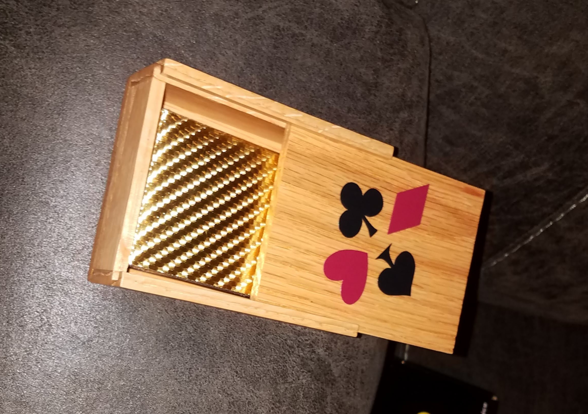

Throughout my time working in the shop I made a wide variety of
small boxes for holding various items. They made good gifts and I enjoyed needing to
focus on the smaller details with the boxes and focus on maximizing the effect of the
wood grain.
Backlit Sign Projects
 After my grandparents passed away my mom and my
older brother made roserys with beads made with flowers from their funeral. We
wanted to make boxes to hold the rosarys to give to members of my dad's side of the family.
My grandfather who passed away is who we go all the woodworking equipment from initially and
who taught my dad the woodworking skills he passed along to me so it was a very meaningful
project to me. The rosary boxes were made from a wide variety of woods such as walnut,
leopard wood, mahogany, cherry, maple, and oak. To build the rosary boxes I used a bunch of
hole saws, forsener bits, and a bunch of sanding to get the round shapes.
After my grandparents passed away my mom and my
older brother made roserys with beads made with flowers from their funeral. We
wanted to make boxes to hold the rosarys to give to members of my dad's side of the family.
My grandfather who passed away is who we go all the woodworking equipment from initially and
who taught my dad the woodworking skills he passed along to me so it was a very meaningful
project to me. The rosary boxes were made from a wide variety of woods such as walnut,
leopard wood, mahogany, cherry, maple, and oak. To build the rosary boxes I used a bunch of
hole saws, forsener bits, and a bunch of sanding to get the round shapes.

This was simple card box design my dad and I created
to protect a deck of cards in a backpack. I gave this card box and deck to a friend
in a secret Santa gift exchange.
I made this small box to practice putting hinges into projects
and also to try making something out of alder. I also demonstrated it for a talent
show because my skillset are not great for a performance. I put a windmill on top because
they are an icon at my hometown.
One of my high school friends requested a box to hold their
oboe reeds so I came up with this design which could hold up to 20 oboe reeds and made
it out of mahogany. This was also the first project where I tried using small hinges.
 This necklace box started as a prototype to the rosary boxes
but I hung onto it and eventually repurposed it to be a box for a gift to my girlfriend
I matches a larger box I gave to her prior to us dating. The lighter wod is oak and the
center wood is mahogany. I designed and 3d printed the velvet covered holer for the necklace itself.
This necklace box started as a prototype to the rosary boxes
but I hung onto it and eventually repurposed it to be a box for a gift to my girlfriend
I matches a larger box I gave to her prior to us dating. The lighter wod is oak and the
center wood is mahogany. I designed and 3d printed the velvet covered holer for the necklace itself.